AI note taking tools offer a range of features, including automated summaries, speaker identification, real-time transcription, and integration with various collaboration and productivity tools. These AI meeting note takers not only save you time and effort by eliminating manual note taking but also enhance collaboration, knowledge sharing, and decision-making within teams and organizations.
Yes, there are AI tools specifically designed to take notes during meetings. AI note taking software use advanced technologies such as natural language processing and speech recognition to automatically transcribe spoken content into written text. They can accurately capture discussions, identify speakers, and generate summaries of key points.
These AI meeting note taker solutions help streamline the meeting process by eliminating the need for manual note taking, ensuring that important information is captured and documented for future reference. They are particularly useful for enhancing productivity, collaboration, and knowledge sharing within teams and organizations.
HOW CAN I USE AI TO TAKE NOTES?
To use AI for note taking, select an AI note taking tool such as Attention, tl;dv, Chorus by Zoominfo, Notion, Fireflies.ai, or others mentioned below. Integrate your chosen tool with your preferred communication or video conferencing platforms, then attend your meetings as usual. The AI note taking tool will automatically transcribe spoken content into text, allowing you to review and edit the transcripts for accuracy. Some AI tools even offer automated summary generation.
Collaborate with your team members by sharing notes, and organizing the information within the tool or integrating it with other productivity systems. By using AI note taking tools, you can enhance your meeting documentation process, facilitate collaboration, and easily retrieve important information for future reference!
TOP AI MEETING NOTES SOFTWARE IN 2023
1. ATTENTION
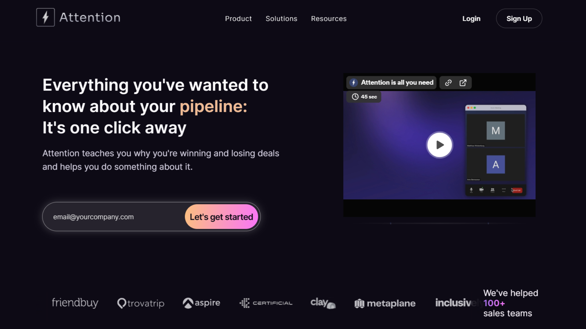
Attention is an AI sales tool that helps you close more deals and improve efficiency. This tool can record your calls and capture insights from your customer conversations by identifying common customer objections, churn reasons, and areas for improvement.
Even if you already have an existing transcription software, you can still use Attention to analyze your customer conversations and get accurate insights. This makes it easier to get started in improving your sales team's performance and efficiency.
Additionally, Attention has other features such as sales training and performance measurement. Imagine your top performers instantly coaching the entire team, all while continuing to crush their quotas. Attention's real-time sales coaching equips reps with the right words at the right moment, leveraging the wisdom of your best closers to elevate every conversation. And with Attention's comprehensive performance metrics, you can track your team's progress and identify areas for further improvement.
If you're looking for a way to improve your overall sales game, Attention is a great option to consider at the top of your list.
Pricing: Sign up to view
Rating: Attention is rated 5/5 on G2 (15 reviews)
2. TL;DV
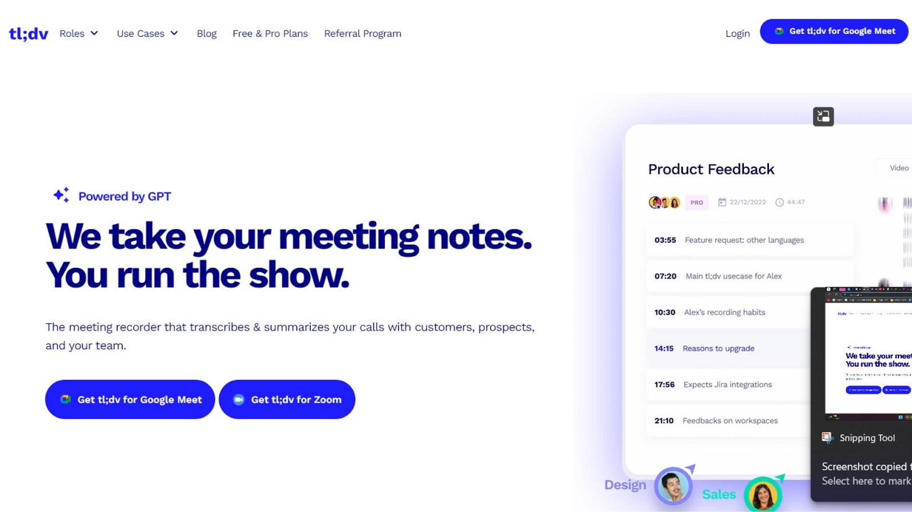
Utilizing GPT-powered technology, tl;dv presents an AI note taking solution that allows you to record, transcribe, and summarize various meetings, including those with your customers, prospects, and internal teams. Tl;dv offers integration with popular communication tools like Zoom and Google Meet, enabling you to quickly access high-quality video and audio recordings after meetings.
This tool includes automatic transcription, catering to over 30 languages and delivering accurate transcripts with speaker identification for efficient content retrieval. With this, you can quickly locate crucial meeting moments using keyword searches and timestamps for easy reference.
Moreover, the AI note taking functionality of tl;dv generates concise summaries of key meeting points, allowing you to stay engaged during your meetings without worrying about manual note-taking. The generated recordings and transcripts are neatly stored within the tl;dv interface, where you can easily edit, organize, and share them.
Pricing: tl;dv offers a Free plan, and premium plans start at $25/mo
Rating: tl;dvis rated 4.7/5 on G2 (78 reviews)
3. MEETGEEK
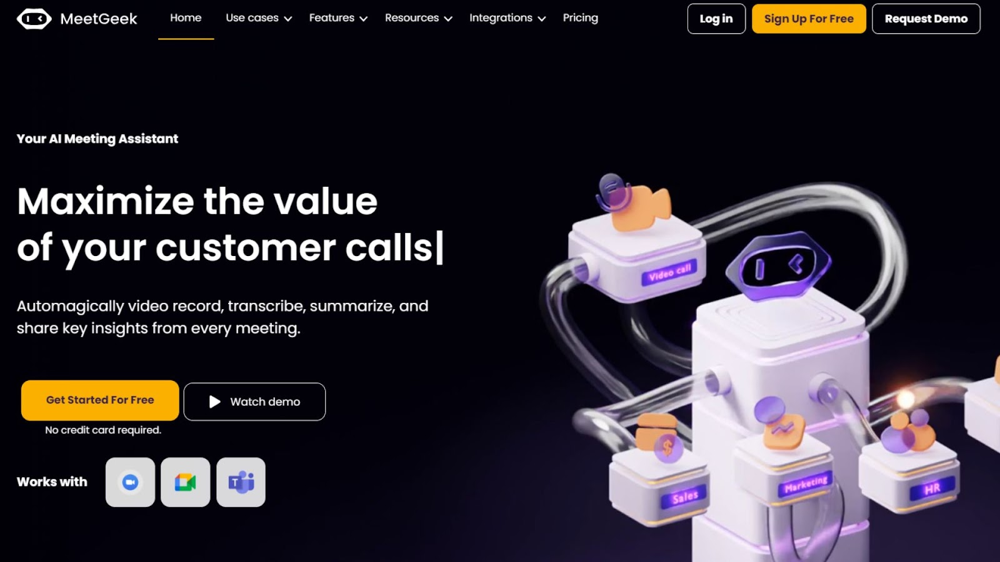
MeetGeek capitalizes on artificial intelligence to create short yet comprehensive summaries, enabling you to concentrate on your sales conversation rather than transcribing. MeetGeek sums up lengthy meeting recordings into concise outlines of central subjects. The meeting minutes encompass a natural language summary, a concise one-paragraph rundown of key highlights, and a transcript supplemented with timestamps for easy navigation.
This AI meeting note taker proficiently tags action items, concerns, decisions, and other crucial details, simplifying the process of sharing key takeaways throughout your organization You can also share your recordings, synopses, and highlights with relevant teams and departments, facilitating alignment and collaboration.
You can integrate MeetGeek with various productivity applications like Notion, Trello, and Slack, which allows you to transition from meeting insights to collaborative workspace.
Pricing: MeetGeek offers a Free plan, and premium plans start at $19/mo
Rating: MeetGeek is rated 4.6/5 on G2 (161 reviews)
4. CHORUS BY ZOOMINFO
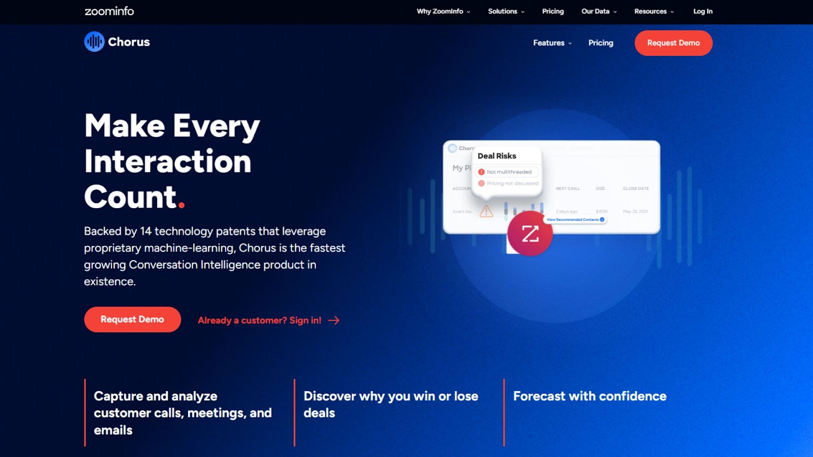
Chorus' AI note taking capabilities offer a solution to capture and analyze customer interactions–including calls, meetings, and emails. Chorus uses advanced proprietary technology to record, transcribe, and analyze calls in real time, granting immediate access to insights minutes after every conversation.
The software's real-time analysis allows you to efficiently identify crucial moments, such as action items, competitor mentions, and feature requests. It also grasps conversational context, automatically detecting emerging themes—both positive and negative—using industry-specific sales language.
Chorus can differentiate between speakers in the same room, ensuring precise insights and accurate attribution. You can also share entire call recordings or specific snippets with your sales team, facilitating feedback and knowledge sharing.
Pricing: Submit your business email to know more about Chorus’ pricing plans
Rating: Chorus is rated 4.5/5 on G2 (2,898 reviews)
5. NOTION
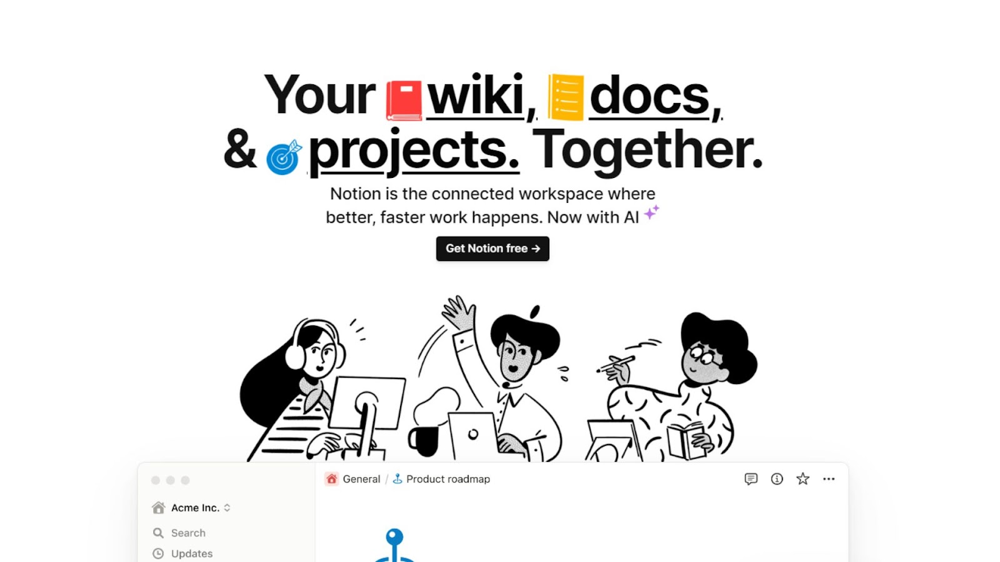
Notion provides a comprehensive platform for capturing and managing meeting transcripts and related tasks in a single, unified space. Designed to enhance the effectiveness of meetings, Notion’s AI meeting note taker enables you to collaborate with your team while keeping everyone well-informed and engaged.
By offering real-time AI note taking and sharing, AI-powered action item listings, and integration with project management tools, Notion streamlines your entire meeting process.
You can leverage Notion to transform basic meeting notes into actionable insights, timelines, and visualizations within your workspace. It can automatically summarize key points, extract items, and present them in an organized manner, so you don’t have to switch between note-taking and separate AI applications.
Like others mentioned above, this software can analyze meeting content, research, sales calls, and more. With features for fixing spelling and grammar, translating content into various languages, adjusting voice and tone, and simplifying language, Notion empowers you to craft clearer and more impactful communication!
Pricing: Notion offers a Free plan, and premium plans start at $8/mo
Rating: Notion is rated 4.7/5 on G2 (4,779 reviews)
6. SEMBLY
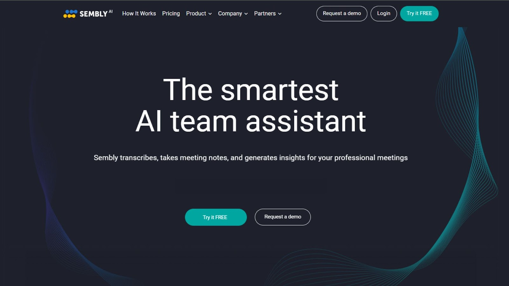
Sembly is another meeting notes software that ensures critical decisions, issues, risks, requirements, and more are never overlooked. This tool transforms your meetings into easily searchable records, allowing you to easily retrieve information based on keywords, key items, or attendees. You no longer need to re-listen to recordings and engage in guesswork!
Sembly creates high-accuracy transcriptions, identifies speakers, and eliminates filler words, creating time-stamped notes and bookmarks for streamlined referencing. It includes intelligent notes featuring summaries, bulleted notes, and detailed discussions on various topics, all delivered in your preferred language.
This AI note taking tool can also automatically identify risk items and complete coverage of significant discussion points. Even when you or someone in your team is unable to attend a meeting due to scheduling conflicts, you can send Sembly in their stead and subsequently review the meeting notes.
Pricing: Sembly offers a Free plan, and premium plans start at $10/mo
Rating: Sembly is rated 4.3/5 on G2 (11 reviews)
7. FIREFLIES.AI
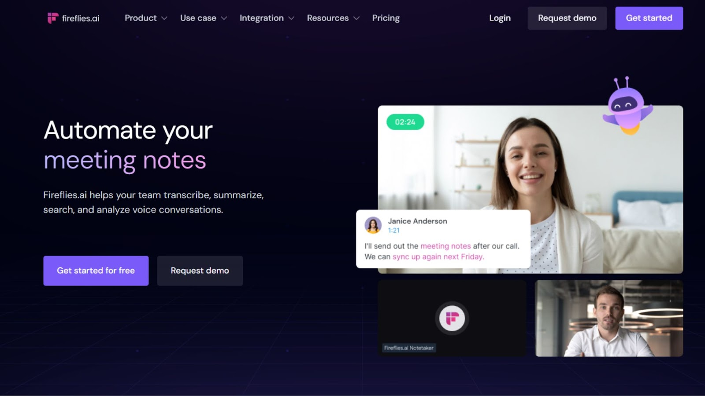
Fireflies.ai is another AI note taking solution that streamlines the process of transcription, summarization, search, and analysis of voice conversations. It automatically records and transcribes meetings across various video-conferencing applications, dialers, and audio files.
By inviting Fireflies.ai meeting note taker to your scheduled meetings, you can capture both video and audio content, generating transcripts in a matter of minutes. This integration extends to popular platforms such as Google Meet, Zoom, Microsoft Teams, Webex, RingCentral, and Aircall.
Fireflies.ai has an AI-powered search feature that enables you to review hour-long meetings in mere minutes. With a single click, it highlights your action items, tasks, questions, and other crucial metrics, facilitating quick information retrieval. You can collaborat with your team by adding comments, pins, and reactions to specific parts of conversations. Additionally, you can create soundbites to easily share memorable moments from meetings and seamlessly integrate with collaboration apps like Slack, Notion, and Asana.
Beyond transcription, this AI note taking tool boasts conversation intelligence that tracks speaker talk time, sentiment, monologues, and other pertinent metrics. Fireflies.ai also features a Chrome extension that automatically captures Google Meet calls and videos from platforms like Loom, Soapbox, and Bubbles.
Pricing: Fireflies.ai offers a Free plan, and premium plans start at $18/mo
Rating: Fireflies.ai is rated 4.5/5 on G2 (83 reviews)
8. AIRGRAM
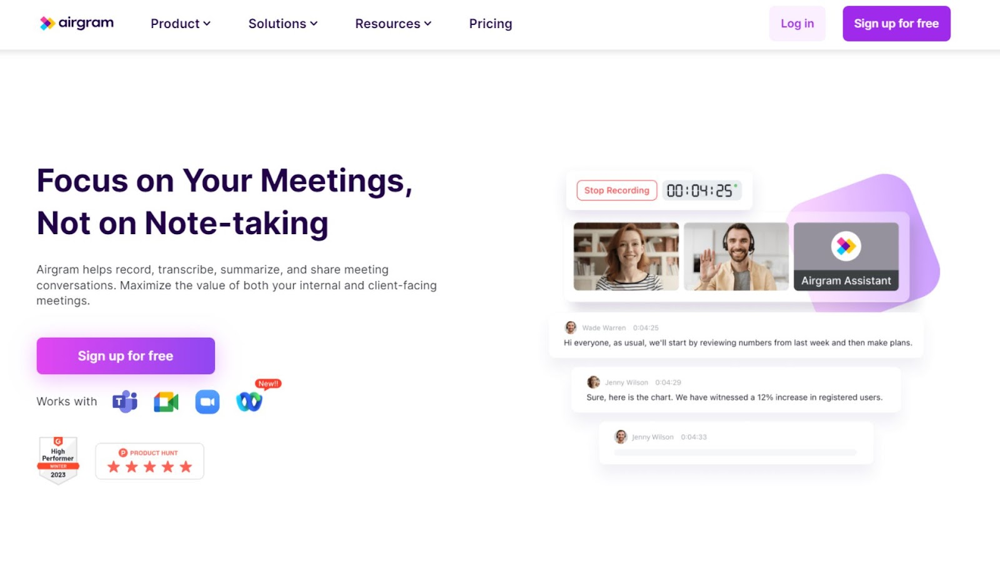
Airgram's AI meeting note taker features the process of documenting, collaborating on, and analyzing meetings, providing a centralized platform for efficient meeting management. With Airgram Notepad, you can jot down notes, record action items, and leave comments during meetings, ensuring that all critical information is captured.
Collaboration is easy as all participants can edit, view, comment, and collaborate on the meeting notes in real time, eliminating the need for time-consuming re-organization of notes later. Airgram’s Notepad allows you to enhance documentation by adding various elements like text, images, and action items.
Airgram associates notes with recurring meetings so you can easily revisit past notes and access all related notes within a single place. Timestamps further enhance your note tracking, linking notes with specific moments of the meetings to provide you with context-rich information.
Airgram’s AI note taking offers real-time transcription which converts your meetings into live transcripts that can be edited, exported, and organized in a centralized location. This not only enhances your productivity by eliminating the need for manual note-taking but also caters to a diverse range of languages, supporting English, German, French, Spanish, Portuguese, Russian, Japanese, and Chinese.
Like others, you can integrate Airgram with various collaboration tools, such as Notion and Slack.
Pricing: Airgram offers a Free plan, and premium plans start at $18/mo
Rating: Airgram is rated 4.6/5 on G2 (70 reviews)
9. SIMPLEEM
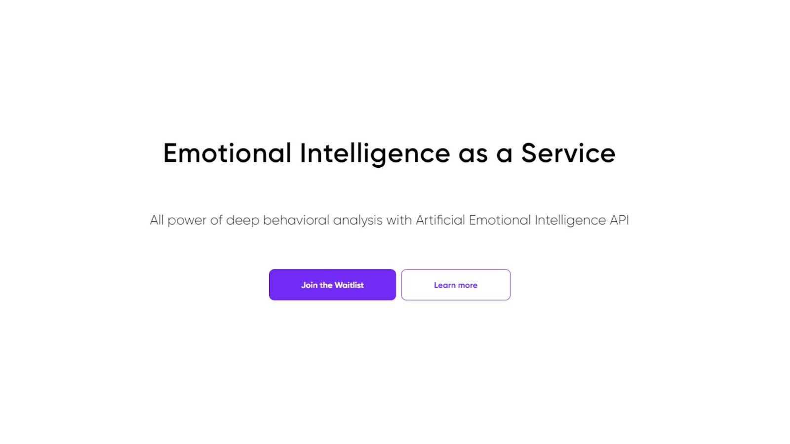
Instead of sifting through hours of sales processes, you can utilize Simpleem's feature-rich reports that flag pivotal moments within conversations! Simpleem’s AI note taking features combine crucial components, such as video call recordings, transcripts containing important topics and phrases, and other relevant data. It integrates with Zoom, enabling the automatic upload of your video recordings into Simpleem's system, so you don’t have to manually upload and annotate calls.
Simpleem’s AI note taking further introduces the AEI (Analyzing Engagement Intensity) framework, which plays a pivotal role in identifying resonating and mismatched moments within conversations in meetings. This empowers you to gauge customer pains and intentions, and ultimately qualify leads for a faster deal closure! Simpleem also provides personalized recommendations to refine pitches based on Simpleem's comprehensive analysis of meetings.
Pricing: Get a 50% discount by joining Simpleem’s waitlist
Rating: Simpleemis rated 5/5 on G2 (3 reviews)
10. MOMENTUM
Momentum's AI note taking features offer an innovative solution that transforms every call into valuable CRM data, effectively eliminating the risk of missing essential sales or customer updates. Momentum operates by automatically generating AI-powered call summaries, field updates, and tasks, all of which seamlessly integrate with Salesforce and Slack. Tailored specifically for sales and customer service, Momentum prioritizes insights that facilitate prompt actions, enabling you to make informed decisions without waiting for periodic pipeline or account review meetings.
Instead of dedicating multiple hours to reviewing team calls, you can swiftly access insights from every call within seconds, strategically allocating coaching time where it matters most! Momentum empowers you by improving pipeline management and closing rates through automated features like MEDDIC, notifications, AI-generated call summaries, and Deal Rooms. These Deal Rooms, integrated with Slack, Salesforce, and other revenue-oriented tools, enhance collaboration, minimizing manual effort and reducing the potential for errors.
The AI note taking capabilities of Momentum are exemplified by its ability to capture post-call insights and tasks, automatically syncing them with Salesforce and Slack. This automation not only saves hours of manual work but also uncovers critical insights on time.
Pricing: Submit your email to try Momentum for Free or book a demo to view their pricing plans
Rating: Momentum is rated 4.8/5 on G2 (17 reviews)
11. OTTER
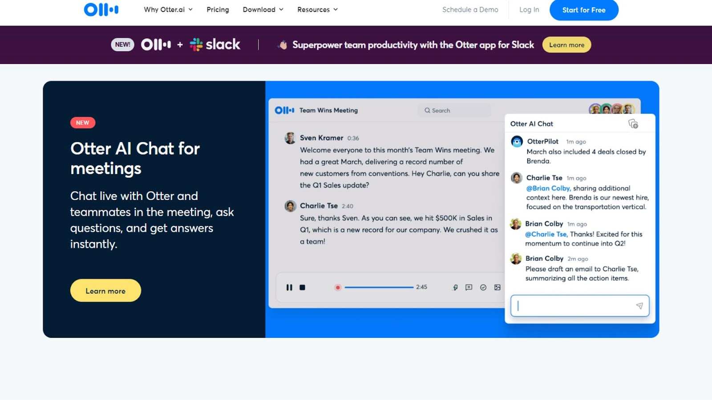
Otter's AI meeting note taker offers a solution to streamline your note taking and enhance your collaboration during meetings. Through Otter, adding comments, highlighting crucial points, and assigning action items fosters efficient teamwork. Facilitated by Otter's integration with Google and Microsoft calendars, you can save time through Automated Meeting Notes. This integration automates meeting participation, recording, and transcribing across platforms like Zoom, Microsoft Teams, and Google Meet.
Otter's AI note taking ability to capture and insert shared slides directly into meeting notes ensures comprehensive context surrounding discussed content. For you, who miss parts of a meeting, Otter's Live Summary feature generates real-time summaries, aiding in quick catch-up. Post-meeting, Otter conveniently emails the summary, eliminating your need to review the entire transcript!
Otter’s AI note taking capabilities extend beyond live meetings to transcribing audio and video files, including those from YouTube and Dropbox. You can export your conversations into various file formats, such as TXT, DOCX, PDF, and SRT, the latter of which is particularly useful for video subtitles and captions. This AI Meeting note taker can generate interactive transcripts for your recordings, so you can revisit key points efficiently. The ability to highlight takeaways and tag teammates for assigned action items also bolsters Otter's collaborative features!
Pricing: Otter offers a Free plan, and premium plans start at $16.99/mo
Rating: Otteris rated 4/5 on G2 (114 reviews)
12. NOTES BY DUBBER
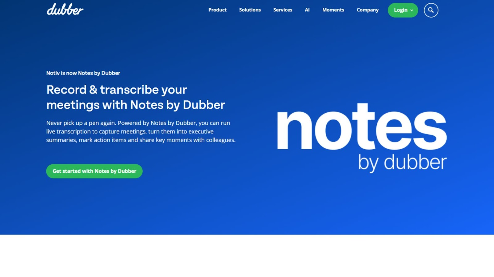
Notes by Dubber, formerly known as Notiv, offers AI note taking capabilities to automatically generate transcripts, action items, and detailed summaries. With integration with your Google or Outlook calendar, Notes by Dubber ensures smooth recording of your scheduled calls and meetings, regardless of their location or format!
Notes by Dubber’s real-time AI meeting note taker frees you from manual note taking, allowing you to concentrate fully on your meeting discussion. The transcripts serve as an easily accessible reference, facilitating a deeper understanding of discussions. Beyond AI note taking, Notes by Dubber provides tools to search through transcripts, summarize key decisions and actions, and share these insights with your attendees, fostering collaboration and alignment after the call!
Notes by Dubber already integrates with the tools that you commonly use, capturing calls and meetings from various platforms and allowing you to share notes, transcripts, and recordings through your CRM and collaboration tools.
Pricing: Sign up to view Notes by Dubber’s pricing plans
Rating: Dubber is rated 4.9/5 on G2 (17 reviews)
13. GRAIN
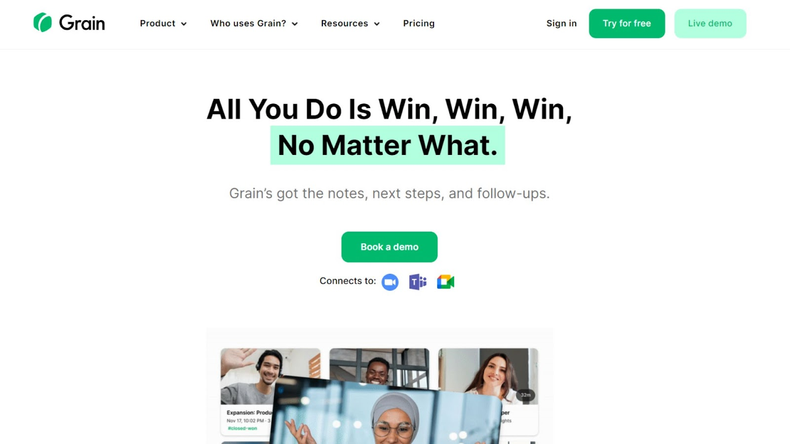
Grain's AI note taking features offer a solution to automate your administrative tasks, allowing you to fully engage in conversations without the burden of manual note-taking! Grain acts as a virtual assistant that takes notes, documents action items, and stores these automated notes in your preferred platforms like Slack, HubSpot, and Salesforce. With its AI meeting note taker, Grain automatically generates summaries featuring key takeaways and next steps, complete with clickable timestamps that enable quick catch-ups for your team members.
Grain's AI note taking capabilities extend beyond sales teams, catering to various roles such as research interviews, sales calls, and customer meetings. The AI-driven meeting recording, note-taking, and insight synthesis make it accessible and valuable for everyone, turning every team member into a customer advocate.
Pricing: Try Grain for Free, or book a demo to view its pricing plans
Rating: Grain is rated 4.6/5 on G2 (263 reviews)
14. ADAM.AI
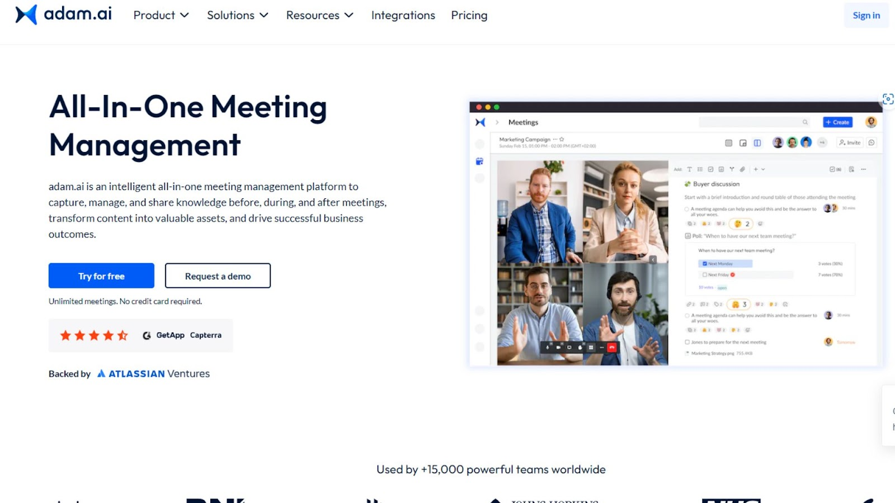
Adam.ai serves as an intelligent all-in-one meeting management platform designed to capture, organize, and share knowledge throughout the entire meeting process, from preparation to post-meeting follow-up. You can streamline your meeting workflows by leveraging customizable templates, centralized file sharing, and real-time meeting insights, all within a single unified space.
Adam.ai’s AI note taking features allows you to centralize your meeting information so you can keep track of timed agenda items and mark them for completion to maximize productivity. Adam.ai facilitates as an efficient AI meeting note taker, allowing both private and public notes to be captured during brainstorming sessions, while also providing a means to share important files and pre-read materials with your team members. Moreover, you can create polls to gather team feedback on critical issues, ensuring that all voices are heard before decisions are made. Adam.ai also supports the assignment of actions and decisions to team members, ensuring clarity and execution of strategies.
Adam.ai’s AI meeting note taker automatically generates meeting transcripts, highlights key content items, and converts them into actionable items. You can generate meeting summaries in the form of ready-made templates that encapsulate crucial content such as actions and decisions, guaranteeing solid meeting outcomes every time! This AI note taking tool also transforms messy notes into organized agenda items, polls, and decisions, ensuring that no valuable insights are lost.
Pricing: adam.ai offers a Free plan, and premium plans start at $14.99/mo
Rating: Adam.ai is rated 4.6/5 on G2 (42 reviews)
15. READ
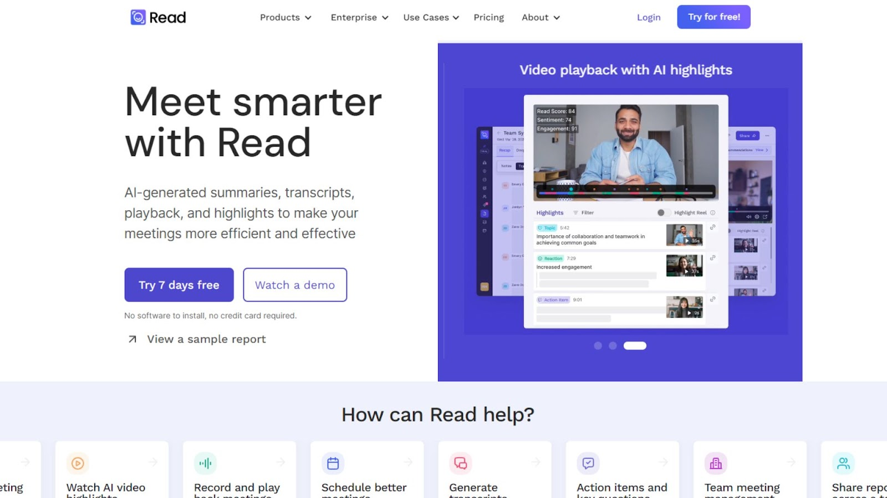
Read offers AI-generated summaries, transcripts, playback, and highlights. By actively participating in meetings, Read discerns the most relevant topics to you and automatically condenses them into a curated feed on your personalized “For You” page. Read’s AI note taking feature sends you a comprehensive meeting recap containing summaries, transcripts, and playback options. You can share these recaps via email, calendar, or a simple link.
Read’s AI meeting note taker goes beyond traditional transcriptions by incorporating audience reactions and sentiments into transcripts. This approach includes AI-based summaries, audience reactions, and contextualized highlights to provide a superior transcription experience. After meetings, Read employs the transcript to generate meeting summaries, topics, action items, and key questions, accessible in your Meeting Report or sent directly to your inbox.
Furthermore, Read’s AI note taking highlights moments that drive high engagement or sentiment across meeting participants. Using the highlights, Read helps you navigate the key points of the meeting and offers easy playback of significant participant reactions and discussions. If you're unable to attend a meeting, Read's Assistant can join on your behalf, generating transcripts, highlighting key text based on sentiment and engagement, and delivering a meeting summary with topics straight to your inbox!
Pricing: Read offers a Free plan, and premium plans start at $19.75/mo
Rating: Read is rated 5/5 on G2 (2 reviews)
16. GOELO
Goelo automatically records, transcribes, and produces AI-generated summaries, allowing you to concentrate on engaging with your customers. Goelo’s AI note taking features capture essential meeting insights and efficiently summarize crucial topics discussed, ultimately saving you time.
Goelo automatically sends all participants a recap email containing the summary and facilitating the progression of deals. With Goelo’s meeting note taker, you can record, transcribe, and summarize Google Meet and Zoom meetings using AI-powered conversational intelligence. Goelo automatically joins meetings and accurately records, transcribes, and summarizes conversations.
AI-generated meeting summaries offer a significant time-saving advantage, allowing you to review a one-hour meeting in just five minutes. Goelo’s AI meeting note taker also has collaborative features like adding comments and reactions to specific parts of the recording, fostering team improvement and growth. Goelo supports a wide range of languages, including English, Español, Deutsch, Français, and many more, ensuring accessibility for a diverse user base.
Pricing: Goelo offers a Free plan, and premium plans start at 39€/mo
17. REWATCH
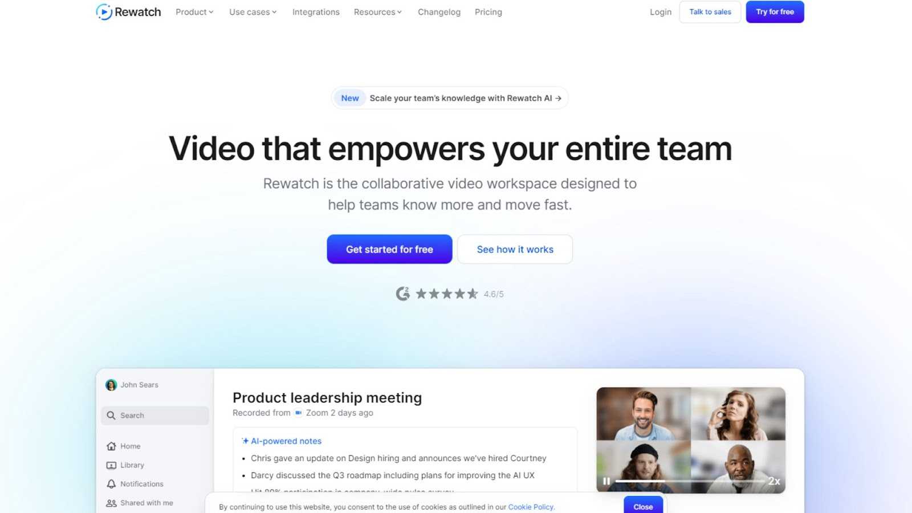
Rewatch offers an AI meeting note taker, allowing you to focus on the crucial points of your conversations without getting distracted by note taking. Rewatch's AI automatically generates comprehensive meeting notes, saving your team valuable hours each day while keeping everyone updated. With automatic meeting recording and transcription, Rewatch ensures that you can concentrate on the actual content of your meetings, enhancing your ability to engage.
Rewatch's AI note taking software delivers automated recaps, summaries, and timestamped action items, making it easy for meeting guests and stakeholders to quickly catch up on essential details. Rewatch acts as a collaborative hub, storing your team's meeting updates in a secure, searchable, and organized database.
Rewatch's AI Recorder can attend, record, and transcribe meetings you may not be able or willing to attend. The meeting recaps and timestamped summaries enable easy review of missed meetings or forgotten details. Rewatch’s AI note taking integrates with various existing tools and workflows, such as Google, Outlook, Zoom, and Slack. Furthermore, the AI meeting note taker supports multi-language transcription and translation for global accessibility.
Pricing: Rewatch offers a Free plan, and premium plans start at $23.75/mo
Rating: Rewatch is rated 4.6/5 on G2 (82 reviews)
18. KRISP
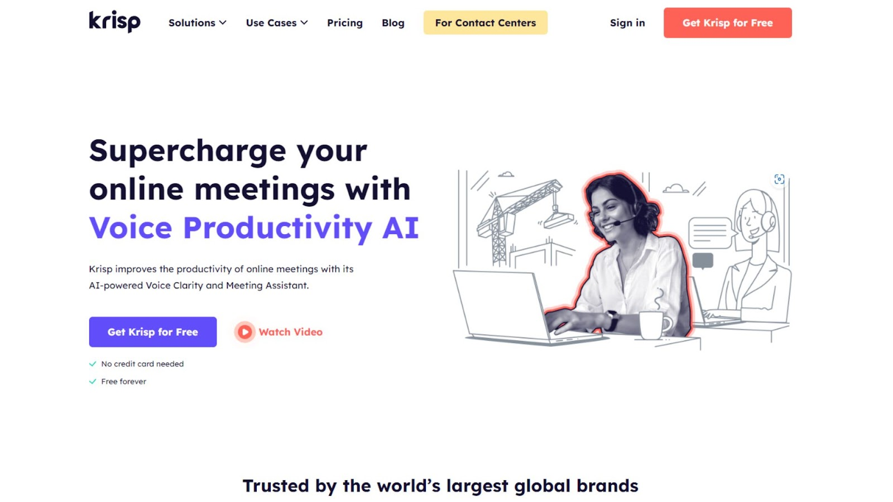
Krisp’s AI note taking allows you to fully engage in conversations without the worry of taking extensive notes. Comprising transcripts and meeting Notes, Krisp's AI note taking features capture the essence of your meetings, preserving important details while you focus on the discussion!
The transcripts serve as written records of meetings while meeting notes provide concise summaries of key points, action items, and discussions. Krisp's AI-based transcription and summarization processes are based on audio from Krisp's microphone and speaker, ensuring the accuracy and inclusivity of all speakers. Krisp's transcripts and meeting notes are generated a few seconds after a call ends, so you can quickly access valuable insights!
Furthermore, you can choose templates for your meeting notes and add action items for further collaboration. With its innovative on-device ASR, near-real-time transcription, and high-quality automated meeting summarization, Krisp’s AI note taking sets a new standard.
Pricing: Krisp offers a Free plan, and premium plans start at $8/mo
Rating: Krisp is rated 4.8/5 on G2 (541 reviews)
19. NOTY
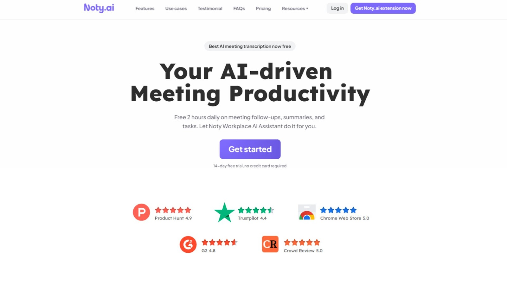
Noty offers an AI transcription service for Google Meet and Zoom calls, allowing you to save business-critical call data forever. With Noty, you can stay fully focused during calls, as the AI meeting note taker records important insights for you. You can just highlight insights with a single click and easily share information with your team. Noty employs ChatGPT-powered summaries, enabling you to spend up to 10 times less time on call recaps and tasks.
After meetings, you can collaborate effectively by sharing transcriptions, highlights, and summaries with call participants and teammates through the Noty application or by exporting to Google Docs. Unlike some competitors, Noty doesn't impose limitations on the number or duration of transcribed meetings, offering free AI meeting note taker for you regardless of the plan. Noty also supports transcriptions in multiple languages.
With Noty's AI note taking, you can leverage real-time transcriptions, automated action item detection, AI meeting summaries, quick meeting minutes, and a library of all conversation summaries to enhance your team's productivity.
Pricing: Noty.ai offers a Free plan, and premium plans start at $10.99/mo
Rating: Noty is rated 4.7/5 on G2 (8 reviews)
20. OLIV
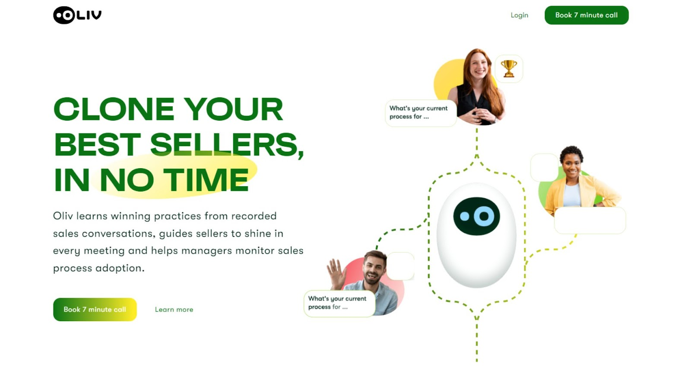
Oliv is a virtual meeting platform that harnesses the power of AI to transform your sales conversations. By learning from recorded sales interactions, Oliv becomes your ultimate AI note taking tool to replicate the success of your top performers.
Oliv's AI engine dives into hours of Gong or Chorus recordings, extracting invaluable insights from these conversations. Oliv identifies the most compelling discovery questions, prevalent customer inquiries, and common objections that drive successful outcomes. This approach helps you streamline your sales strategies by focusing on winning practices that have been proven to work.
Oliv ensures that your sales playbook remains up-to-date and relevant in today's dynamic business landscape through its AI note taking features. While traditional annual playbook updates might fall short, Oliv's AI engine refines call scripts, updates competitive battle cards, and equips your sales representatives with the most accurate and effective responses based on real-world experiences. With Oliv, you can transition from infrequent playbook revisions to monthly updates, ensuring your team is always equipped with the most effective tactics and approaches.
Pricing: Book a call with Oliv to know more about its pricing plans
DISCOVER MORE TOOLS
Are you in search of additional AI sales tools? Look no further than our software section at coldiq.com/tools, where you will find a selection of 400+ highly rated tools across numerous categories. From finding new leads to nurturing existing connections and automating your outreach efforts, we have a tool to suit your needs. Don't miss out on the opportunity to enhance your sales strategy – click here to discover the perfect tool!
CONCLUSION
In conclusion, AI note taking tools have revolutionized the way we capture, organize, and utilize information from meetings. These tools use advanced technologies such as natural language processing and speech recognition to transcribe spoken content into written text, making it easier to review and share critical insights.
AI note taking tools offer a range of features, including automated summaries, speaker identification, real-time transcription, and integration with various collaboration and productivity tools. These AI meeting note takers not only save you time and effort by eliminating manual note-taking but also enhance collaboration, knowledge sharing, and decision-making within teams and organizations. Whether you're a sales professional, a team manager, or simply looking to streamline your meeting documentation process, these AI note taking solutions provide valuable assistance and contribute to improved efficiency and productivity!
Don’t hesitate to reach out if you have any questions or if you want to get a discount on a software.
Find your prospects’ mobile phone numbers using FullEnrich, a waterfall enrichment software that maximizes your data coverage and boosts your sales efforts. It searches over 15 data vendors’ databases to find your prospect’s valid email addresses and phone numbers.
Imagine if there was a tool that could do the same research in a fraction of the time, all while verifying every data point along the way. This is precisely what data enrichment tools were built to do.
The Clay X ColdIQ event in Barcelona was the best opportunity to see familiar faces in the industry and connect with people who share the same passion for outbound strategies.